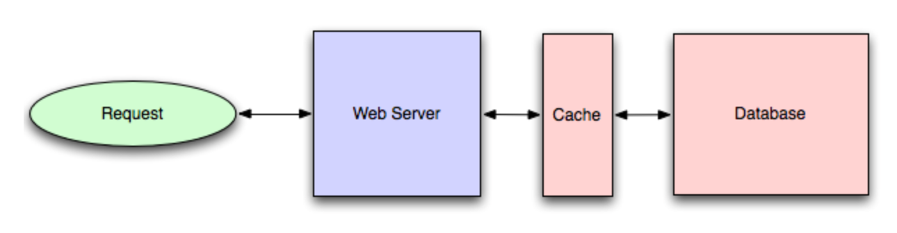

负载均衡根据协议(random, round-robin, random with weighting for machine capacity)将请求分散到多个目标上去。 一个正常的大型系统会在三个层次上进行负载均衡：
Smart Client是使用服务主机池并且主动在它们之间进行负载均衡的用户。它会主动检测失效主机，并且主动处理新添加的主机。
这是最贵但很高效的解决方案。
即使是不缺钱的大公司，也会尽量避免使用专门的负载均衡器。一般的做法是，在与用户请求第一次接触的地方使用硬件进行负载均衡，在其他地方使用其他方式来进行负载均衡(Smart Clients或者混合方式)。
使用软件来实现了负载均衡。
缓存通常包括下面做法：提前计算结果、提前进行复杂的索引和将经常使用的数据放在更快的后端。
但是缓存也经常可能产生数据不一致的情况。
缓存的方式主要有两种：应用缓存和数据库缓存。 应用缓存需要在应用中明确实现缓存。 通常需要首选查询缓存中是否有这个值，如果没有再去数据库中查询。 伪代码实现如下：
key = "user.%s" % user_id
user_blob = memcache.get(key)
if user_blob is None:
user = mysql.query("SELECT * FROM users WHERE user_id=\"%s\"", user_id)
if user:
memcache.set(key, json.dumps(user))
return user
else:
return json.loads(user_blob)数据库缓存如下： 
memcached 和 Redis是常见的内存缓存。常见的内存缓存策略有Least Recently Used。
CDN将处理静态内容放置在地理上分部的网络上。如果网站还没有大到需要另设CDN，可以将静态内容放置到另一个子域名下(如 static.example.com)，使用Lightweight HTTP(如 Ngnix)。
缓存的有效性却要和数据源进行确认，如果不能保证数据的有效性，缓存就没有存在的意义。
为了保证数据的一致性，可以有下面两种方法： 1. 每当一个数据变化时，将新的值写入到缓存中去。 2. 清除目前值，等下次读操作的时候，再写入缓存
Dividing work between off-line work handled by a consumer and in-line work done by the web application depends entirely on the interface you are exposing to your users. Generally you'll either:
perform almost no work in the consumer (merely scheduling a task) and inform your user that the task will occur offline, usually with a polling mechanism to update the interface once the task is complete (for example, provisioning a new VM on Slicehost follows this pattern), or perform enough work in-line to make it appear to the user that the task has completed, and tie up hanging ends afterwards (posting a message on Twitter or Facebook likely follow this pattern by updating the tweet/message in your timeline but updating your followers' timelines out of band; it's simple isn't feasible to update all the followers for a Scobleizer in real-time).
Message queues have another benefit, which is that they allow you to create a separate machine pool for performing off-line processing rather than burdening your web application servers. This allows you to target increases in resources to your current performance or throughput bottleneck rather than uniformly increasing resources across the bottleneck and non-bottleneck systems.